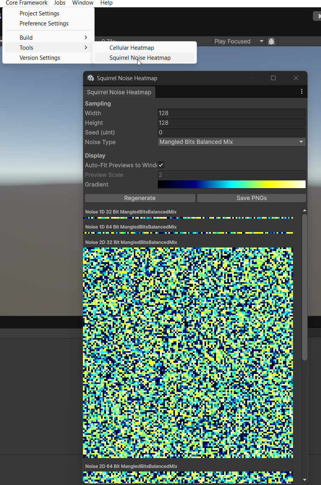

SquirrelNoiseHeatMapWindow
Source: ./Editor/Tools/SquirrelNoiseHeatMapWindow.cs
Overview
Editor window that previews Squirrel noise outputs as heatmaps for quick visual checks of distribution and hashing mixes. It renders 1D, 2D, and 3D variants for both 32-bit and 64-bit implementations across the selected NoiseType.
Open from:
Core Framework → Tools → Squirrel Noise Heatmap

What it shows
For the chosen NoiseType:
- 1D:
Noise 1D 32 Bit,Noise 1D 64 Bit(row textures) - 2D:
Noise 2D 32 Bit,Noise 2D 64 Bit - 3D:
Noise 3D 32 Bit,Noise 3D 64 Bit(packed as strips of Z-slices across X: columnz*_width + x, row =y)
All previews are mapped with the selected Gradient over [0..1].
Controls
Sampling
- Width / Height — texture dimensions.
- Seed (uint) — hash seed.
- Noise Type — hashing variant (
NoiseType, e.g.,MangledBitsBalancedMix).
Display
- Auto-Fit Previews to Window — scale to window width.
- Preview Scale — used when Auto-Fit is off.
- Gradient — color ramp.
Actions
- Regenerate — allocate (if needed) and recompute all buffers.
- Save PNGs — exports six images:
Noise 1D 32 Bit <NoiseType>Noise 1D 64 Bit <NoiseType>Noise 2D 32 Bit <NoiseType>Noise 2D 64 Bit <NoiseType>Noise 3D 32 Bit <NoiseType>Noise 3D 64 Bit <NoiseType>
Implementation notes
- 1D buffers =
width. - 2D buffers =
width * height. - 3D buffers flattened to
(height rows) × (width*width columns). - Sampling calls:
SquirrelNoise32Bit.Get1D/2D/3DNoise01(...)SquirrelNoise64Bit.Get1D/2D/3DNoise01(...)
- Upload via
NoiseEditorHelper.ApplyToTexture, textures created withNoiseEditorHelper.EnsureTex.
Tips
- Use the same Seed and vary Noise Type to compare hash mixes.
- Keep Width/Height modest (e.g., 128–256) for quick iteration; 3D previews allocate
height * width^2floats. - Save a set of PNGs and diff them when tuning
NoiseTypeimplementations.
Dependencies
CoreFramework.Random(Squirrel 32/64 noise +NoiseType)NoiseEditorHelper(texture creation/apply/save)